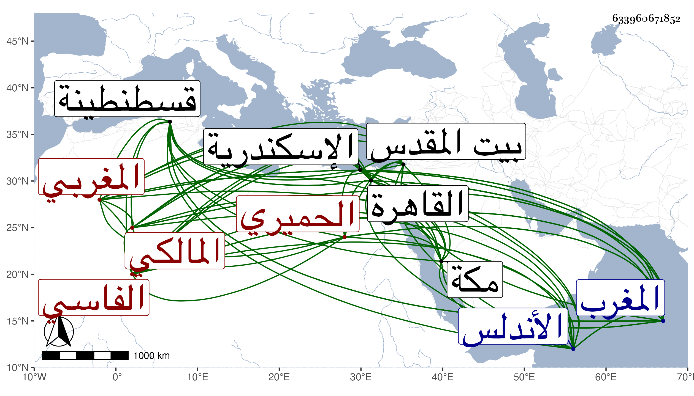

0902Sakhawi.DawLamic.ITO20230111-ara1.EIS1600.633960671852
Biography ID: 633960671852
363
أحمد بن محمد بن عبد الرحمن بن محمد بن عبد الرحمن بن محمد بن عبد الرحمن ابن محمد بن عبد الرحمن بن محمد بن عبد الرحمن بن محمد بن عبد الرحمن بن محمد بن عبد الرحمن بن محمد بن عبد الرحمن الشهاب أبو العباس بن أبي القسم الحميري الفاسي الأصل القسنطيني المولد التونسي الدار المغربي المالكي ويعرف بالخلوف . ولد في ثالث المحرم سنة تسع وعشرين وثمانمائة بقسنطينة وسافر به أبوه وهو في المهد إلى مكة فأقام معه فيها أربع سنين ثم تحول به إلى بيت المقدس فقطنه وحفظ به القرآن وكتبا جمة في فنون وعرض على جماعة ولازم أبا القسم النويري في الفقه والعربية والأصول وغيرها حتى كان جل انتفاعه به وكذا أخذ رواية وغيرها عن الشهاب بن رسلان والعز القدسي وماهر وغيرهم وبالقاهرة النحو والصرف والمنطق وغيرها عن العز عبد السلام البغدادي في آخرين وممن أخذ عنه العربية ببلاد المغرب أحمد السلاوي وقال أنه أحفظ من لقيه بها ، وتعانى الأدب فبرع نظما ونثرا وكتب لمولاي مسعود بن صاحب المغرب عثمان حفيد أبي فارس ولي عهد أبيه الملقب بذي الوزارتين ، ونظم المغني والتلخيص وغير ذلك وعمل بديعية ميمية سماها مواهب البديع في علم البديع أولها :
| أمن هوى من ثوى بالبان والعلم | هلت براعة مزن الدمع كالعنم |
وشرحها شرحا حسنا وكذا له رجز في تصريف الأسماء والأفعال سماه جامع الأقوال في صيغ الأفعال وفي علم الفرائض سماه عمدة الفارض وعمل في العروض تحرير الميزان لتصحيح الأوزان وامتدح النبي صلى الله عليه وسلم كثيرا وكذا مدح ملوك بلاده ، وقدم القاهرة غير مرة منها في أثناء سنة سبع وسبعين وثمانمائة في البحر إلى أن حج في موسمها ثم عاد واستمر إلى أن سافر في ربيع الثاني سنة إحدى وثمانين وأكرم نزله وانصرافه ولقيته مودعا له فكتبت عنه من نظمه ما ضمن فيه قول ابن الأحمر صاحب الأندلس :
| أفاتكة اللحظ التي سلبت نسكي | على أي حال كان لا بد لي منك |
| فأما بذل وهو أليق بالهوى | وإما بعز وهو أليق بالملك |
فقال :
| أماط الهوى عن واضحي برقع النسك | فوجدت من أهواه عن هوة الشرك |
| فقلت وقد أفتت لحاظك بالفتك | أفاتكة اللحظ التي سلبت نسكي |
على أي حال كان لا بد لي منك
| يمينا بنجم القرط منك إذا هوى | وخال على عرش بوجنتك استوى |
| لئن لم تفي لا بد للقلب ما نوى | فأما بذل وهو أليق بالهوى |
وإما بعز هو أليق بالملك وهو حسن الشكالة والأبهة ظاهر النعمة طلق العبارة بليغا بارعا في الأدب ومتعلقاته ويذكر بظرف وميل إلى البزة وما يلائمها كتب عنه غير واحد بالقاهرة والاسكندرية وقد أثنى علي نظما ونثرا بما أثبته في مكان آخر .
